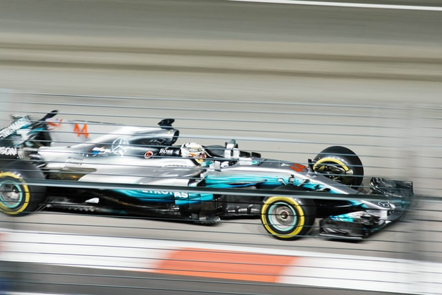

Mercedes AMG Petronas F1 Team
Mercedes-Benz, a brand of the Mercedes-Benz Group, has been involved in Formula One as both team owner and engine manufacturer for various periods since 1954. The Mercedes-AMG Petronas F1 Team, which is based in Brackley, England,[1] and possesses a German licence,[2] is as of 2022 majority owned by the Mercedes-Benz Group with Toto Wolff having a significant shareholding. Mercedes-branded teams are often referred to by the nickname, the "Silver Arrows". An announcement was made in December 2020[3] that Ineos planned to take a one third equal ownership stake alongside the Mercedes-Benz Group and Wolff; this came into effect on 25 January 2022. Mercedes returned to Formula One in 1994 as an engine manufacturer in association with Ilmor, a British independent high-performance autosport engineering company, which developed their engines. The company won one constructors' title and three drivers' titles in a works partnership with McLaren which lasted until 2009. In 2005, Ilmor was rebranded as Mercedes AMG High Performance Powertrains. In 2010, the company bought the Brawn GP team, rebranding it as Mercedes. Since a major rule shake-up in 2014, which required the use of turbochargers and hybrid electric engines, Mercedes has become one of the most successful teams in Formula One history, winning seven consecutive Drivers' titles from 2014 to 2020 and eight consecutive Constructors' titles from 2014 to 2021. It has set records for most wins in a season (19 in 2016), and for most consecutive constructors' titles. The manufacturer has also collected more than 200 wins as an engine supplier and is ranked second in Formula One history. Ten Constructors' and thirteen Drivers' Championships have been won with Mercedes-Benz engines. read more....